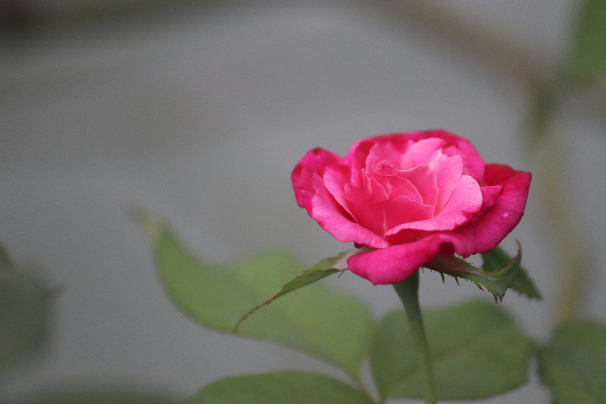

BUNGA TULIP
ditulis oleh lestarivebrianti. pada 29 Oktober 2024
Bunga Tulip yang diketahui berasal dari Negara Belanda, Walau kenyataannya bunga tulip ini berasal dari Turki yang ditemukan pertama kali oleh Turki Usmani memiliki bentuk kelopak unik yang memberikan daya Tarik tersendiri bagi para pecinta bunga. Dikagumi dari hampir semua kalangan, Wanita, Pria, Tua, Muda. Bunga yang memiliki tinggi antara 10 – 70 cm ini memiliki daun berlilin dan terlihat mengkilap.
FLOWER
Sejauh ini, orang memandang bunga tulip datang dari Negeri Oranye. Belanda. Tetapi rupanya, bunga tulip pertama kalinya ada di tanah Turki, sebelumnya bunga tulip tumbuh liar di teritori Asia tengah dan Asia Barat. Karena terpikat pada keelokan dan kesempurnaan bunga tulip Dinasti Ottoman Turki mulai membudidayakan bunga tulip. Baru selanjutnya di era 16 M, Belanda mengenali tulip sesudah salah seorang perwakilan Turki bawa bibit bunga cantik ini ke situ. Kata “tulip” datang dari Bahasa Turki yang maknanya “serban”, seperti kain yang dililit untuk tutupi kepala. Dan orang Eropa menyebutkan Tulip sebagai dulband bahasa Persia untuk serban. Tidak dikenali kapan tepatnya negara Kincir Agin itu mulai membudidayakan bunga tulip, tetapi disebut bunga tulip mulai dibawa ke Belanda pada sekitaran tahun 1550-an oleh beberapa kapal dari Istanbul. Dari situ orang belanda banyak sekali yang membudidayakan bunga tulip, sehingga Belanda terkenal dengan sebutan “Negara Bunga Tulip” Beberapa negara di penjuru dunia ada yang memutuskan bunga tertentu sebagai simbol atau lambang khas dari bangsa itu. Selanjutnya, bunga itu pada akhirnya dijadikan sebagai bunga nasional atau flora berdasarkan lambang dari negara tersebut. Begitupun dengan bunga tulip. Bunga tulip mempunyai nama latin yakni Tulip.
Tulip biasa merupakan herba tahunan berumbi dalam keluarga lili (Liliaceae) yang berasal dari Eropa selatan hingga Asia tengah. Tulip tumbuh setinggi 4 hingga 28 inci dan mekar di pertengahan hingga akhir musim semi dengan bunga yang hadir dalam semua warna kecuali biru sejati. Tanam tulip tiga kali lebih dalam dari umbi di tanah yang subur, kaya bahan organik tetapi memiliki drainase yang baik, dan kelembapan sedang di bawah sinar matahari penuh. Pembusukan umbi dan akar dapat terjadi di tanah yang basah dan drainasenya buruk. Tulip tumbuh paling baik di daerah dengan musim dingin yang sejuk dan lembap serta musim panas yang hangat dan kering dan biasanya ditanam secara massal. Tanaman ini tidak tahan panas dan kehilangan kekuatan bunganya saat suhu tanah mencapai 70 derajat F.
Tulip dapat ditanam sebagai tanaman tahunan atau tahunan, meskipun tulip spesies sering kali tumbuh lebih baik daripada tanaman hibrida sebagai tanaman tahunan. Saat menanam tulip sebagai tanaman tahunan, segera singkirkan tangkai bunga yang layu setelah mekar untuk mencegah pembentukan biji, tetapi jangan singkirkan dedaunan hingga menguning. Dalam kebanyakan kasus, pertumbuhan tulip menurun drastis mulai tahun kedua. Banyak tukang kebun dan ahli hortikultura memperlakukan tulip, terutama hibrida, sebagai tanaman tahunan. Tulip merupakan tanaman pot luar ruangan yang indah, dan dapat dipaksa masuk ke dalam pot untuk dipajang di dalam ruangan. Tulip sering ditanam di perbatasan dan taman potong, tetapi dampak maksimalnya terjadi pada penanaman massal saat sedang berbunga.
BUNGA MAWAR
Bunga mawar merupakan bunga yang indah dan memiliki bau yang harum. Bunga ini sering digunakan dalam momen-momen spesial, misalnya seperti tanda ungkapan cinta, untuk hadiah valentine, wisuda, anniversary dan lain-lain. Sebelum membelinya, pastikan kamu telah mengetahui deskripsi tentang bunga mawar karena setiap jenisnya memiliki karakteristik masing-masing. Dikutip dari buku berjudul Mawar karya Lanny Lingga (2008:5), bunga mawar tidak hanya digunakan untuk acara-acara tertentu saja. Mawar juga digunakan sebagai bahan utama pembuatan minyak atsiri dan parfum. Maka tidak heran jika tanaman yang satu ini dinilai memiliki nilai ekonomi yang tinggi.
BUNGA SEPATU

Bunga sepatu yang memiliki nama latin Hibiscus rosa-sinensis L yaitu sebuah tanaman hias yang seringkali tumbuh pada dataran rendah. Selain keindahan dari mahkotanya, bunga satu ini juga memiliki struktur layaknya sepatu yang menarik. Bunganya yang besar dan berwarna merah serta tidak memiliki aroma. Bunga sepatu ini terbagi kultivar dan hibrida yang dapat berupa bunga tunggal atau mahkota selapis. Bisa juga bunga ganda atau daun mahkota berlapis yang berwarna putih sampai kuning, orange sampai merah tua atau merah jambu. Bunga sepatu ini yang sangat identik dengan warna yang terang. Selain itu, terdapat pula benang sari yang menonjol pada bagian tengahnya.
FLOWER
Bunga adalah bagian dari tanaman yang umumnya berpenampilan indah dan mengeluarkan aroma wangi. Bunga adalah salah satu organ tumbuhan yang mempunyai fungsi biologis. Fungsi biologis bunga adalah untuk memicu proses reproduksi tanaman, yaitu dengan cara mempertemukan serbuk sari dan putik. Dalam proses penyerbukan, bunga juga mendapat bantuan dari pihak ketiga di luar tanaman, yaitu dari angin atau serangga, seperti kupu-kupu dan lebah. Cara reproduksi ini tergantung dari jenis tanamannya, ada yang mampu bereproduksi secara mandiri dan ada yang membutuhkan bantuan dari luar.
Jenis bunga terbagi menjadi bunga tunggal dan majemuk. Satu tangkai bunga tunggal hanya mendukung satu bunga, sedangkan satu tangkai bunga majemuk dapat mendukung banyak bunga. Bunga majemuk disebut sebagai inflorescence. Beberapa contoh bunga tersebut adalah bunga matahari dan anthurium yang sebenarnya merupakan kumpulan dari beberapa bunga atau majemuk, tetapi tampak seperti satu kesatuan bunga tunggal. Bunga memiliki fungsi yang sangat penting, karena di bagian bunga proses penyerbukan dan pembuahan terjadi. Setelah terjadi pembuahan, tanaman dapat berkembang biak dengan mengeluarkan buah. Dikarenakan bentuk umumnya yang cantik, bunga juga sering dijadikan sebagai tanaman hias agar keindahannya dapat kita nikmati.
Pertama, bunga mawar. Bunga yang disenangi oleh sebagian besar wanita. Tak hanya cantik, mawar juga harum. Bunga mawar sering dipilih sebagai hadiah. Bagi kalangan tertentu, bunga mawar merupakan lambang cinta. Ini tercermin dalam pergaulan, misalnya seseorang yang memberikan setangkai mawar merah kepada gadis pujaannya, berarti mengisyaratkan pernyataan cinta. Kedua, bunga melati. Bunga yang disimbolkan dengan cinta, tetapi beberapa budaya menganggap bunga melati mewakili apresiasi dan keberuntungan. Bunga ini juga kerap digunakan dalam upacara pernikahan karena mewakili kesucian. Sementara itu, bunga melati yang dipakai dalam acara pemakaman melambangkan perpisahan. Ketiga, bunga tulip. Bunga yang berasal dari Belanda ini tak hanya cantik, tetapi juga elegan. Bunga itu memiliki makna berbeda-beda sesuai dengan warnanya. Tulip merah dikaitkan dengan cinta yang dalam, tulip ungu itu melambangkan simbol elegan dan kesempurnaan, dan tulip putih melambangkan kesucian dan kerendahan hat.